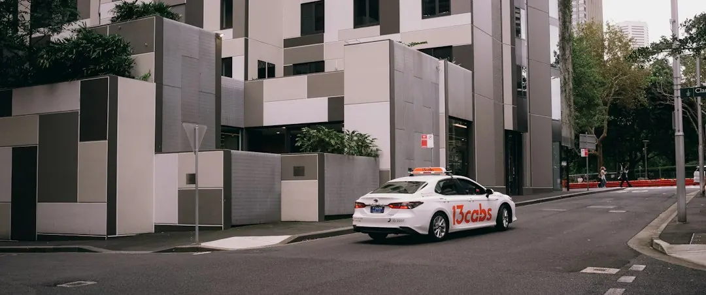

A Sydney home charger is usually a dedicated Level 2 wall charger on its own circuit in a garage, carport or basement bay. Single phase 7 kW suits most cars and homes. Three phase 22 kW requires both suitable three phase supply and a vehicle that can accept that rate. Cable length, wall penetrations, mounting position and switchboard condition influence the work and cost. Apartment projects also require owners corporation approval, load management and fair electricity billing.
For homeowners planning home ev charger installation sydney work, the practical decisions are charger speed, electrical supply, parking position, switchboard condition and the approval path for the property.
Home Ev Charger Installation Sydney Explained
Ev Charger Installation Sydney describes home charging as a dedicated wall charger connected on its own circuit. The installation setting changes the job: a house, townhouse and apartment can involve different parking positions, cable routes and decision makers.
The proposed bay should be identified before equipment is chosen. A garage, carport or basement bay may require different mounting and cable arrangements. An older inner west cottage may prompt a switchboard question, while a newer house in Kellyville may already have three phase supply. Chatswood and Bondi apartments can involve shared basement wiring and owners corporation approval.
Include the car model, parking arrangement, property type and photos of the switchboard or proposed mounting point in the first enquiry. Those details give the electrician a clearer starting point than a charger model alone.
Match charging capacity to the vehicle and supply
Single phase 7 kW is described as suitable for most cars and homes. Three phase 22 kW is useful only where the property has suitable three phase supply and the vehicle can accept that charging rate. A higher rated unit does not automatically make charging faster.
Feature selection follows the household routine. Smart chargers can provide scheduling and load balancing. Solar aware equipment can use surplus rooftop solar, with battery options available in a solar charging setup. A Tesla Wall Connector, standard wall charger, smart unit and solar integration each answer a different requirement.
The useful comparison is therefore between the car's charging capability, the available supply and the features that will actually be used. That avoids paying attention to the headline capacity while overlooking the electrical arrangement.
Use a first enquiry that exposes the real scope
A short, complete enquiry makes the later quote easier to read. Use this structure and replace the brackets with your own details:
- Property: [house, townhouse or apartment], located in [suburb].
- Car: [make and model], with [known charging capability if available].
- Parking: [garage, carport or basement bay], with the proposed charger position marked in [photo or plan].
- Supply: [single phase, three phase or unknown], with [switchboard photo attached].
- Features: [standard charging, Tesla Wall Connector, smart scheduling, load balancing or solar aware charging].
- Apartment information: [owners corporation status, shared basement details and proposed billing method].
The written response should make five points visible: the charger and capacity, the circuit arrangement, the cable route and length, any wall penetrations, and whether switchboard or consumer mains work is included. It should also identify who handles approvals and which completion documents will be supplied.
Read apartment proposals as shared infrastructure
In an apartment, the charger is only one part of the proposal. Owners corporation approval, basement load management and a fair way to bill each owner for electricity are identified as issues to resolve before the installation is treated as settled.
The proposal should name the parking bay, connection point and control method, then explain how access and usage will be handled. If those matters remain open, the equipment choice is premature. The Sydney apartment EV charging guide provides a more focused comparison for shared car parks.
This distinction is useful in Sydney buildings because a private charger may still rely on shared electrical infrastructure. The resident's preferred position and the building's approval path need to agree before work is scheduled.
Finish with testing, paperwork and approval checks
Fixed charger wiring is electrical work in NSW and requires an appropriate electrical licence. There is no separate EV charger licence. After testing, the electrician must lodge a Certificate of Compliance for Electrical Work through BCNSW eCert within seven days, and the homeowner should request a copy.
The selected charger should carry the Regulatory Compliance Mark. Council approval is usually not needed when the installation fits exempt development rules, but another development pathway may apply when it does not. Work affecting a footpath or road reserve is separate and requires agreement from the relevant roads authority.
Keep the certificate with the agreed scope and charger documentation. The final record should identify the installed position and electrical work, while an apartment file should also retain the approval, load management and billing arrangements.
- Describe the site. State the property type, suburb, parking position and proposed charger location.
- Describe the electrical setting. Provide the car model, supply type if known and clear switchboard or cable route photos.
- Set the equipment brief. Name the charging features required and relate them to the vehicle's charging capability.
- Review the written scope. Check capacity, circuit, cable work, switchboard items, approvals, testing and compliance documents.
| Choice | Best fit | Decision to record |
|---|---|---|
| Single phase 7 kW | Most cars and homes | Whether the supply and switchboard support a dedicated circuit |
| Three phase 22 kW | Suitable three phase supply and compatible vehicle | Whether the car can accept 22 kW and whether that capacity is useful |
| Smart or solar aware charger | Scheduling, load balancing or surplus solar | Which household feature is required |
| Apartment installation | Basement or shared car park | Approval, demand control and electricity billing method |
Common questions
Can I install a fixed EV charger myself in NSW? No. Fixed charger wiring is electrical work requiring an appropriate electrical licence. The installation must be tested, and the certificate must be lodged through BCNSW eCert within seven days of testing.
Can a charger be installed in a Sydney apartment car park? Usually, subject to owners corporation approval. The proposal should address basement load management and a fair method for billing each owner for electricity used.
Is a 22 kW charger always faster at home? No. It requires suitable three phase supply and a vehicle that can accept 22 kW. Single phase 7 kW is suitable for most cars and homes.
What should a written quote explain? It should identify the charger, circuit, mounting position, cable work, penetrations, switchboard requirements, testing and compliance documents. Apartment quotes should also address approval, load management and billing.
This guide covers home and apartment charging choices, electrical checks, quote scope, approval questions and NSW compliance paperwork.